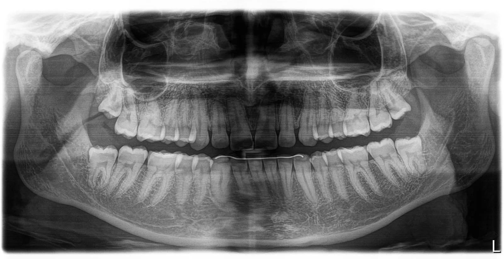

O que é a radiografia panorâmica odontológica?
A radiografia panorâmica (também conhecida como ortopantomografia ou raio X panorâmico) é um exame de imagem que proporciona uma visão ampla de toda a cavidade bucal em uma única tomada, permitindo a avaliação simultânea das arcadas superior (maxila) e inferior (mandíbula), além das estruturas adjacentes como articulações temporomandibulares (ATM), seios maxilares e ossos faciais.
É um exame extraoral — ou seja, o equipamento gira ao redor da cabeça do paciente sem nenhum contato dolorido. É rápido, confortável e amplamente utilizado na prática odontológica como exame inicial para diagnóstico e planejamento.
Para que serve a radiografia panorâmica?
A panorâmica é indispensável para identificar diversas alterações bucais e ósseas:
- Lesões cariosas extensas que afetam estruturas profundas
- Reabsorções ósseas e radiculares em casos de doença periodontal
- Granulomas, cistos e tumores nos ossos maxilares
- Dentes inclusos ou impactados (sisos, caninos retidos)
- Fraturas decorrentes de traumas faciais
- Avaliação geral antes de tratamentos ortodônticos
- Acompanhamento da saúde bucal em consultas de rotina
- Exame pré-operatório em procedimentos cirúrgicos
Como é feita a radiografia panorâmica?
O procedimento é simples e dura menos de 1 minuto:
- O paciente é orientado a retirar brincos, colares, próteses removíveis e qualquer objeto metálico
- Posiciona-se em pé no equipamento panorâmico digital
- O queixo é apoiado em um suporte e o paciente morde uma pequena haste para alinhamento
- O aparelho gira uma única volta ao redor da cabeça em cerca de 20 segundos
- A imagem é processada digitalmente em poucos minutos
- O exame é entregue em formato digital (WhatsApp, e-mail ou pen drive)
Vantagens da radiografia panorâmica digital
Na Radix Radiologia, todas as nossas radiografias são 100% digitais, o que significa diversas vantagens em relação aos métodos antigos:
- Menor dose de radiação que radiografias convencionais
- Imagem de alta definição para diagnóstico mais preciso
- Resultado imediato, em poucos minutos
- Sem uso de filmes químicos — exame sustentável
- Envio digital facilitado para o dentista solicitante
- Possibilidade de manipulação da imagem (zoom, contraste) pelo profissional
A radiografia panorâmica dói? É segura?
Não, o exame é totalmente indolor e não invasivo. Como é extraoral, não há contato com a parte interna da boca, eliminando qualquer desconforto. A dose de radiação é extremamente baixa, sendo segura para todas as idades, inclusive crianças (com indicação odontológica).
Para gestantes, recomendamos sempre informar a equipe e o profissional solicitante. Em casos especiais, utilizamos avental de chumbo como proteção adicional.
Onde fazer radiografia panorâmica em Taquaritinga?
A Radix Radiologia Odontológica é referência em radiografia panorâmica digital em Taquaritinga e região. Estamos localizados na Praça Dr. José Furiatti, 184, Centro, com equipamentos de última geração e equipe técnica especializada. Atendemos pacientes de Taquaritinga e cidades vizinhas, com ou sem pedido odontológico para a panorâmica.